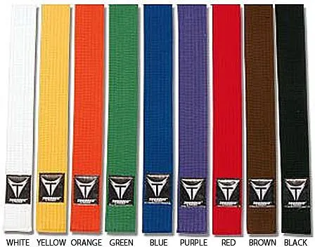

ΚARATE!
Traditional Shotokan Karate
Τα Kata
Τα Kata στο παραδοσιακό Shotokan Karate αποτελούν ένα από τα σημαντικότερα στοιχεία της πολεμικής τέχνης του karate. Η λέξη «Kata» (型) σημαίνει «φόρμα» και περιγράφει μια προκαθορισμένη σειρά τεχνικών, όπως γροθιές, λακτίσματα, αποκρούσεις, στροφές και αλλαγές στάσεων, οι οποίες εκτελούνται με συγκεκριμένη σειρά και κατεύθυνση. Σκοπός των kata είναι η βελτίωση της τεχνικής, της ισορροπίας, της δύναμης, της ταχύτητας, του συντονισμού και της συγκέντρωσης του καρατέκα. Στο Shotokan υπάρχουν πολλά διαφορετικά kata, τα οποία χωρίζονται ανάλογα με τη δυσκολία τους. Τα πέντε βασικά kata είναι τα Heian Shodan, Heian Nidan, Heian Sandan, Heian Yondan και Heian Godan, τα οποία διδάσκονται συνήθως στους αρχάριους και βοηθούν στην εκμάθηση των βασικών τεχνικών. Στη συνέχεια, οι μαθητές προχωρούν σε πιο απαιτητικά kata, όπως τα Bassai Dai, Kanku Dai, Jion, Empi και Gankaku, τα οποία απαιτούν μεγαλύτερη ακρίβεια, έλεγχο και εμπειρία. Κάθε kata έχει τη δική του ιστορία, ιδιαίτερα χαρακτηριστικά και συγκεκριμένη διαδρομή εκτέλεσης, γνωστή ως embusen. Παράλληλα, μέσω της μελέτης του bunkai, οι καρατέκα μαθαίνουν πώς μπορούν να εφαρμοστούν οι κινήσεις ενός kata σε πραγματικές καταστάσεις αυτοάμυνας. Η σωστή εκτέλεση απαιτεί προσοχή στη στάση του σώματος, στην αναπνοή, στον ρυθμό και στο kime, δηλαδή στη συγκέντρωση της δύναμης τη σωστή στιγμή. Συνεπώς, τα kata δεν αποτελούν απλώς μια σειρά κινήσεων, αλλά έναν σημαντικό τρόπο εξάσκησης που καλλιεργεί την πειθαρχία, την υπομονή, τον αυτοέλεγχο και τον σεβασμό, στοιχεία που αποτελούν βασικές αξίες του παραδοσιακού Shotokan Karate.

Η Ιστορία του Karate
Η ιστορία του παραδοσιακού Karate ξεκινά πριν από πολλούς αιώνες στην Οκινάουα της Ιαπωνίας, ένα νησί που επηρεάστηκε σημαντικά από τις εμπορικές και πολιτιστικές σχέσεις με την Κίνα. Εκεί αναπτύχθηκαν συστήματα άοπλης μάχης, τα οποία συνδύαζαν τοπικές τεχνικές με στοιχεία από κινεζικές πολεμικές τέχνες. Η λέξη «Karate» γράφεται σήμερα στα ιαπωνικά 空手 και σημαίνει «άδειο χέρι», καθώς η τέχνη βασίζεται κυρίως στη χρήση του σώματος και όχι σε όπλα. Στις αρχές του 20ού αιώνα, το Karate άρχισε να διαδίδεται από την Οκινάουα στην υπόλοιπη Ιαπωνία, κυρίως χάρη στον Gichin Funakoshi, ο οποίος θεωρείται ο ιδρυτής του Shotokan Karate και ένας από τους σημαντικότερους δασκάλους στην ιστορία του. Ο Funakoshi παρουσίασε το Karate στην Ιαπωνία το 1922 και συνέβαλε στη μετατροπή του από μια παραδοσιακή πολεμική τέχνη σε ένα οργανωμένο σύστημα εκπαίδευσης που καλλιεργεί τόσο το σώμα όσο και τον χαρακτήρα. Το Shotokan πήρε την ονομασία του από το ψευδώνυμο «Shoto» του Funakoshi, που αναφερόταν στον τρόπο με τον οποίο υπέγραφε τα ποιήματά του, ενώ η λέξη «kan» σημαίνει αίθουσα ή χώρος εκπαίδευσης. Μετά τον Β΄ Παγκόσμιο Πόλεμο, το Shotokan εξαπλώθηκε σε πολλές χώρες του κόσμου και εξελίχθηκε σε ένα από τα πιο γνωστά στυλ Karate. Η προπόνησή του βασίζεται σε τρεις βασικούς τομείς: το Kihon, που περιλαμβάνει τις βασικές τεχνικές, το Kata, που αποτελείται από προκαθορισμένες ακολουθίες κινήσεων, και το Kumite, που αφορά την εξάσκηση με συνασκούμενο. Ωστόσο, το παραδοσιακό Karate δεν έχει ως μοναδικό σκοπό τη μάχη ή τον ανταγωνισμό, αλλά δίνει μεγάλη σημασία στην πειθαρχία, στον σεβασμό, στην υπομονή, στον αυτοέλεγχο και στη συνεχή προσωπική βελτίωση. Οι μαθητές μαθαίνουν να σέβονται τον δάσκαλό τους, τους συναθλητές τους και τις αρχές του dojo, ενώ παράλληλα καλλιεργούν την αυτοπεποίθηση και την υπευθυνότητά τους. Έτσι, το παραδοσιακό Karate αποτελεί όχι μόνο μια πολεμική τέχνη και μια μορφή σωματικής άσκησης, αλλά και έναν τρόπο ζωής που συνδυάζει τη σωματική δύναμη με την πνευματική καλλιέργεια και τον σεβασμό προς τους άλλους.